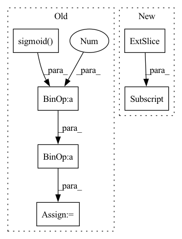

Pattern ID :40694

Before Change
Returns:
torch.Tensor: Saliency Map
saliency_map = torch.sigmoid(torch.mean(feature_map, dim=1))
saliency_map = (
255
* (saliency_map - torch.min(saliency_map))
/ (torch.max(saliency_map) - torch.min(saliency_map) + 1e-12)
)
saliency_map = saliency_map.to(torch.uint8)
return saliency_map
After Change
min_values, _ = torch.min(saliency_map, -1)
saliency_map = (
255
* (saliency_map - min_values[:, None])
/ (max_values - min_values + 1e-12)[:, None]
)
saliency_map = saliency_map.reshape((bs, h, w))
In pattern: SUPERPATTERN
Frequency: 3
Non-data size: 6
Instances
Fragment ID: 114981048
Project Name: openvinotoolkit/model_preparation_algorithm
Commit Name: e2c8010f30007ae6429e629b2c2a5b2c13815d07
Time: 2022-07-21
Author: eugene.liu@intel.com
File Name: mpa/modules/hooks/auxiliary_hooks.py
M Class Name: SaliencyMapHook
N Class Name: SaliencyMapHook
M Method Name: func(1)
N Method Name: func(1)
M Parent Class:
N Parent Class:
M File Name: mpa/modules/hooks/auxiliary_hooks.py
N File Name: mpa/modules/hooks/auxiliary_hooks.py
M Start Line: 87
M End Line: 92
N Start Line: 87
N End Line: 97
'>
Before Change
theta = self.fc1(theta)
theta = self.relu(theta)
theta = self.fc2(theta)
theta = 2 * self.sigmoid(theta) - 1
relu_coefs = theta.view(-1, self.channels, 2*self.k) * self.lambdas + self.init_v
// BxCxL -> LxBxCx1
After Change
elif self.conv_type == "2d":
// BxCxHxW -> HxWxBxCx1
x_perm = x.permute(2, 3, 0, 1).unsqueeze(-1)
output = x_perm * relu_coefs[:, :, :self.k] + relu_coefs[:, :, self.k:]
// HxWxBxCx2 -> BxCxHxW
result = torch.max(output, dim=-1)[0].permute(2, 3, 0, 1)
'>
Fragment ID: 114981037
Project Name: islanna/dynamicrelu
Commit Name: 1ee4394be4c9e5517d7dc2e5605416b65b321e53
Time: 2020-04-14
Author: slizhikova.a.v@gmail.com
File Name: dyrelu.py
M Class Name: DyReLUB
N Class Name: DyReLUB
M Method Name: forward(2)
N Method Name: forward(2)
M Parent Class: DyReLU
N Parent Class: nn.Module
M File Name: dyrelu.py
N File Name: dyrelu.py
M Start Line: 55
M End Line: 66
N Start Line: 62
N End Line: 80
'>
Before Change
// Update gate of the GRU.
update_gate_conv = layers.SNConv2D(num_channels, self._kernel_size, sn_eps=self._sn_eps)
update_gate = F.sigmoid(update_gate_conv(xh))
// Gate the inputs.
gated_input = torch.cat([x, read_gate * prev_state], dim=1)
// Gate the cell and state / outputs.
output_conv = layers.SNConv2D(num_channels, self._kernel_size, sn_eps=self._sn_eps)
c = F.relu(output_conv(gated_input))
out = update_gate * prev_state + (1.0 - update_gate) * c
new_state = out
return out, new_state
After Change
outputs = []
for step in range(x.size(1)):
// Compute current timestep
output, hidden_state = self.cell(x[:, step, :, :, :], hidden_state)
outputs.append(output)
// Stack outputs to return as tensor
outputs = torch.stack(outputs, dim=0)
'>
Fragment ID: 114981058
Project Name: openclimatefix/skillful_nowcasting
Commit Name: b080785f5f559396d0b7e1a52d1c6d9a948d9439
Time: 2021-11-08
Author: jacob@bieker.tech
File Name: nowcasting_gan/layers/ConvGRU.py
M Class Name: ConvGRU
N Class Name: ConvGRU
M Method Name: forward(3)
N Method Name: forward(3)
M Parent Class: torch.nn.Module
N Parent Class: torch.nn.Module
M File Name: nowcasting_gan/layers/ConvGRU.py
N File Name: nowcasting_gan/layers/ConvGRU.py
M Start Line: 19
M End Line: 51
N Start Line: 70
N End Line: 78